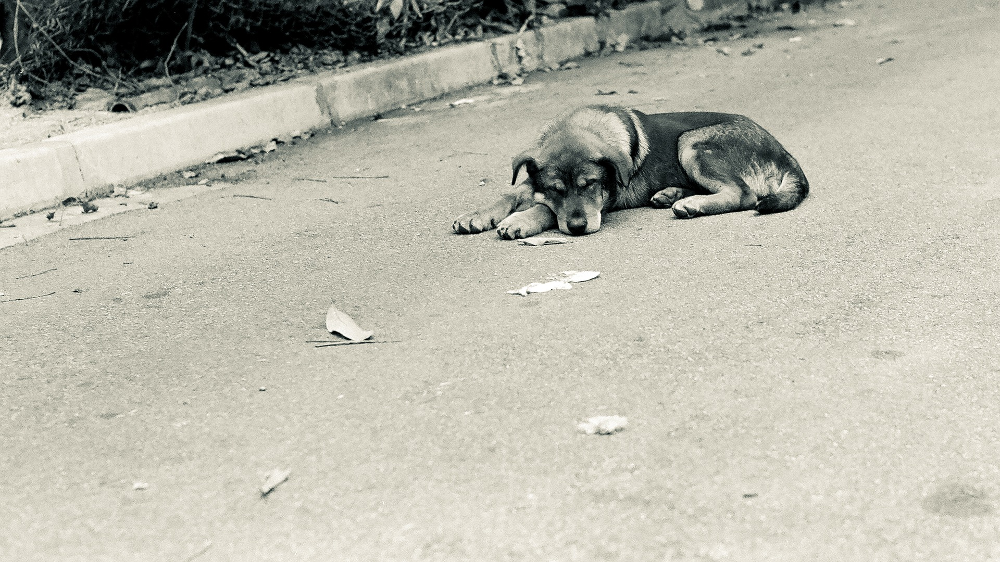
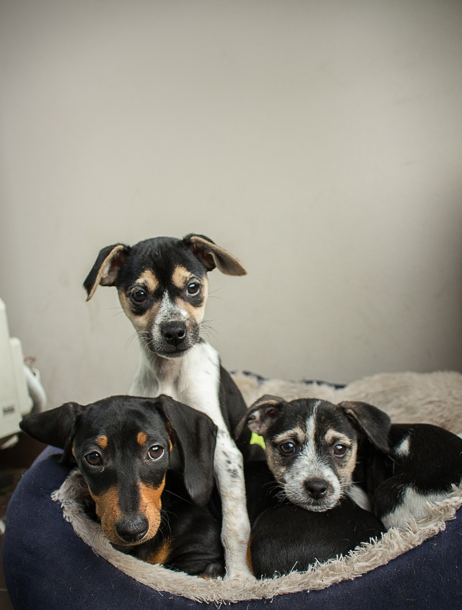

¿Quienes somos?
Este proyecto se enfoca en la preocupación de que cada día “El abandono de mascotas en la calle, en especial los perros”, es más frecuente y se está teniendo una sobre población de perros callejeros, por lo que es necesario que se exhorte a las personas de todas las edades a que tomen conciencia de este problema. Por lo que se pretende dar a conocer esta situación por medio redes sociales y página web; así como el pedir que si quieren comprar un perrito mejor lo adopten, así como tener la cultura de esterilizar a su mascota, por lo que se pretende llevarlo a cabo en coordinación con el apoyo de personas voluntarias que se interesen en el tema.
El impacto de este proyecto es interesante porque se espera que la comunidad de mi colonia Sector Popular en la alcaldía Iztapalapa y alrededores se unan a la causa para disminuir el abandono de las mascotas y que adopten aquellas que se encuentran en la calle publicando sus fotos.
 Objetivo General
Sensibilizar a las personas para que no abandonen a sus mascotas en la calle y si alguien quiere comprar un perrito mejor adopten, se propondrá que esterilicen a sus mascotas para evitar camadas no deseadas y con ello poder evitar que se tenga demasiados perros callejeros. Por lo que se deberán programar reuniones con personas voluntarios así como publicaciones en redes sociales y ver si en un lapso de seis meses se observan cambios en la colonia.
 Actividades a Desarrollar
- Sondeo de opinión entre vecinos de la colonia.
- Conseguir el apoyo de un albergue en donde se puedan llevar a los perritos encontrados.
- Publicar convocatoria para solicitar apoyo de un veterinario.
- Trabajar sobre los resultados de la encuesta de que opinan los vecinos con la problemática y posibles soluciones de la comunidad.
- Conseguir el apoyo de un albergue en donde se puedan llevar a los perritos encontrados. Trabajo de campo. Revisión de perritos, identificar y tomar fotografías para publicaciones en página de Facebook .
- Elaboración de Evaluación respecto a las tareas desarrolladas durante tres meses.